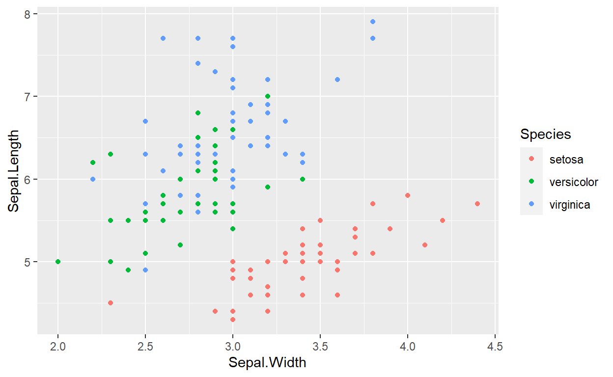

6 Blocks
6.1 Equations
Here is an equation.
\[\begin{equation} f\left(k\right) = \binom{n}{k} p^k\left(1-p\right)^{n-k} \tag{6.1} \end{equation}\]
You may refer to using \@ref(eq:binom), like see Equation (6.1).
6.2 Theorems and proofs
Labeled theorems can be referenced in text using \@ref(thm:tri), for example, check out this smart theorem 6.1.
Theorem 6.1 For a right triangle, if \(c\) denotes the length of the hypotenuse and \(a\) and \(b\) denote the lengths of the other two sides, we have \[a^2 + b^2 = c^2\]
Read more here https://bookdown.org/yihui/bookdown/markdown-extensions-by-bookdown.html.
6.3 Callout blocks
The R Markdown Cookbook provides more help on how to use custom blocks to design your own callouts: https://bookdown.org/yihui/rmarkdown-cookbook/custom-blocks.html
6.4 github and git
Reproducibility practices for scientific code are sorely needed. Now is the time to come together as a scientific community to decide what works and what doesn’t.
One of the best ways to collaborate on a digital project is to use the version control system, git, and have it freely available through an online hosting system, in this case github. Every file that is used to build this guide is on a repository called reproducibility-guide on github.
There are several ways to contribute to this website. You don’t have to contribute code. No matter if you are a programmer new to science, or a scientist new to programming, your perspective is needed for the advancement of scientific reproducibility.
6.5 Issues
One way to begin contributing is to start an issue. Issues are how we discuss the project. It can be as large as changing the entire structure of the site, or small, like adding a new tool to the Tools section.
Everyone who watches the project is alerted when an issue has been established, and everyone can comment on it. If you have an idea for making the site better, or just want to start a discussion on reproducibility in sciences, please start a new issue.
If you’re not sure where to start, take a look at already started issues. Feel free to voice your opinion on any issue already mentioned, come join the discussion!
If you understand the basics of git, maybe you would like to take action and fix the issue by adding code to the repository.
6.6 Contributing to Codebase
Each collaborative project on github has an ecosystem, so the rules for collaborating are different depending on the project. Often housed in a CONTRIBUTING.md file, there are rules that have been adapted to suit the functionality of the project. For our project, we are flexible on how you contribute and encourage newbie git collaborators: everyone has to start somewhere. Here is a general guide for how you can contribute to the basecode for this site. If you are a beginning git user, this may seem a bit confusing, but we promise it becomes clear after trying it.
6.6.1 Tiny Tutorial on Contributing to Repositories
(requires base knowledge of git. Remixed from Karl Broman’s github Guide - Contribute to Someone’s repository
Say you want to contribute changes to our code repository.
Go to the repository on github. (This site is from
ropensci, and is calledreproducibility-guide, you’ll find it athttps://github.com/ropensci/reproducibility-guide.Click the fork button at the top right.
You’ll now have your own copy of that repository in your github account.
Open a terminal/shell.
Type
$ git clone https://github.com/username/reproducibility-guide.git
where username is your username.
You’ll now have a local copy of your version of that repository called “origin”
Add a connection to the original owner’s repository and calling it “master”.
$ git remote add master https://github.com/ropensci/reproducibility-guide.gitYou can check if this worked with the command. You should see the connection to your version of the repository and the ropensci “master” version.
$ git remote -vNow you can make changes to files. The main branch for the Reproducibility Guide site is
gh-pages. You may also start another branch for to work on. To check which branch you are on typegit branch.git addandgit committhose changesgit pushthem back to github. These will go to your version of the repository.Go to your version of the repository on github.
Click the green “Pull Request” button at the top of the page.
Note that the ropensci repository will be on the left and your repository will be on the right.
Give a short explanation of the changes and click the “Send pull request” button.
6.7 Pulling others’ changes
Before you make further changes to the repository, you should check that your version is up to date relative to your friend’s version.
Go into the directory for the project and type:
$ git pull ropensci master
This will pull down and merge all of the changes that your friend has made.
Now push them back to your github repository.
$ git push
6.8 Add yourself to the contributors section
Now that you have contributed, you can add yourself to the list of contributors. The file to add your name to is located in the contributors folder in the main directory, just add your name to the index.md file housed here.
6.10 Captioned figures and tables
Figures and tables with captions can also be cross-referenced from elsewhere in your book using \@ref(fig:chunk-label) and \@ref(tab:chunk-label), respectively.
See Figure 6.1.
Figure 6.1: Here is a nice figure!
Don’t miss Table 6.1.
| temperature | pressure |
|---|---|
| 0 | 0.0002 |
| 20 | 0.0012 |
| 40 | 0.0060 |
| 60 | 0.0300 |
| 80 | 0.0900 |
| 100 | 0.2700 |
| 120 | 0.7500 |
| 140 | 1.8500 |
| 160 | 4.2000 |
| 180 | 8.8000 |
6.11 How to do a report using RMarkdown?
Programming languages typically used by scientistics for data analysis have libraries or packages that can be used to generate reproducible reports. The most popular ones are Jupyter Notebooks for scientists who primarily use python and RMarkdown for those who use R. While they both share many commonalities, their implementation and everyday applications differ. Here, we focus on RMarkdown.
RMarkdown is a file format (typically saved with the .Rmd extension) that can contain: a YAML header (see next section), text, code chunks, and inline code. The .rmarkdown package converts this file into a report most commonly into HTML or PDF.
The .rmarkdown package automates a multi-step process (Fig. xx). Under the hood, it calls the .knitr package that converts the Rmd file into a markdown file. In the process, .knitr takes all the code chunks and the inline code, run them through R (or other programs), capture their output, and incorporates them in the report. Afterwards, .rmarkdown calls the pandoc program (it is an external program that is not related to R) that can take the markdown file and converts to a variety of formats. For pandoc to generate PDF files, you will need a functional installation of LaTeX that you will need to install separately.
The bookdown package comes in to take care of numbering the figures and tables, as well as dealing with citations. As its name suggests, this package can be used to author books, but it is also well-suited to help generating reports.
6.11.1 the YAML header
The YAML header is at the top of your file, it is delineated by three dashes (---) at the top and at the bottom of it. It is optional, but can be used to specify:
- the characteristics of your document: the title, authors, date of creation.
- the arguments to pass to pandoc to control the format of the output as well as additional information such as the bibliography file and the formatting of the list of references.
- parameters for your report: for instance, you can specify a parameter such that your report will only use a subset of your data so the final product will be generated quickly when you are developing the code for your project. Once your code is working, you can switch to the full dataset.
6.11.2 Code chunks
Code chunks are interspersed within the text of the report. They are delineated by three backticks ($```$) at the top and at the bottom of it. The top backticks are followed by a curly bracket that specify: (1) the language in which the code chunk is written, (2) the name of the chunk (optional but good practice), (3) knitr options that control whether and how the code, the output, or the figure are interpreted and displayed. Everything that comes after the name of the chunk has to be a valid R expression: the strings need be quoted, the arguments are separated by commas, and logical values (TRUE/FALSE) need to be capitalized.
6.11.3 How to deal with figures?
The knitr package provides many options to finely control how your figures are going to be generated. Some of knitr’s options can be set individually for each chunk or be set globally. For a reproducible report, it is common practice to have chunk at the beginning of the report that sets default options for the figures. It is also usually a good place to load all the packages you will need for your analysis. For instance the following chunk will do the following:
- all the figures generated by the report will be placed in the
figures/sub-directory - all the figures will be 6.5 x 4 inches and centered in the text.
Additionally, this chunk will be named figuresetup, and we use the echo=FALSE option so the code for the chunk will not be displayed in the report, and use the include=FALSE option so no output produced by this chunk will be included in the report.
For our figures, we can now do

Figure 6.2: Relation between sepal width and length in three species of Iris.
When this file will be processed, it will create an image file (figures/sepalwidthlength.png) with the default dimension and the caption specified by the value of the fig.cap argument. You can use markdown formatting within the captions of your figures. This figure will have the label fig:sepalwidthlength that we will be able to use for cross referencing (see below).
If you wish to incorporate a figure that is not generated by code (a photo of your field site or study organism), using the function #knitr::include_graphics() takes care of many details for you, and generates labels and captions as if it was generated by code.

6.11.4 How to deal with tables?
To generate tables, knitr comes with the function kable that might be sufficient to make simple tables to represent data frames within your report. However, there are many packages that provide more sophisticated approaches to display and format tabular data within your reports. This page provides an overview of the capabilities of the different packages.